Lastnosti Fourierove transformacije#
Na tej vaji si bomo iz praktičnega vidika pogledali lastnosti Fourierove transformacije, s katerimi imamo pogosto opravka pri merjenju signalov:
linearnost,
časovno skaliranje,
(časovni obrat),
časovni premik,
(amplitudna modulacija - frekvenčni premik),
odvajanje in integriranje,
konvolucija in produkt funkcij.
Naloga#
Domača naloga
Z uporabo generatorja signalov in zajemnega sistema Arduino pripravite signale, s katerimi boste demonstrirali lastnosti Fourierove transformacije, določene v podatkih naloge.
Priprave in zajema signalov se lotite v skupini s kolegi, ki imajo enake podatke.
LabView program za zajem lahko prenesete v obliki zip arhiva.
Pripravite kratko poročilo (obseg od 3 do 10 celic s kodo v okolju Jupyter Notebook), iz katerega naj bodo razvidni podatki naloge (iz tabele), ter da ste vse parametre in zahteve naloge naloge tudi upoštevali. Demonstrirajte vpliv izbrane lastnosti Fourierove transformacije na zajeta signala (zglede poiščite v predlogah za predavanja in vaje).
Poročilo oddajte v .pdf obliki (glejte navodila za oddajo domačih nalog).
Dodatek: Raziščite lastnost konvolucije / množenja signalov v povezavi s Fourierovo transformacijo in jo prikažite ter komentirajte na primeru uporabe oken (uporabite scipy.signal.windows) z enim izmed signalov, zajetih na vaji.
Linearnost#
Linearnost
fs = 100 # Hz
dt = 1 / fs
t = np.arange(0, 2, dt)
A = 5
p = 4
o = 2
x = A * np.sin(2*np.pi*t * p) + o*2
y = 2*A * signal.square(2*np.pi*t * p/2) + o
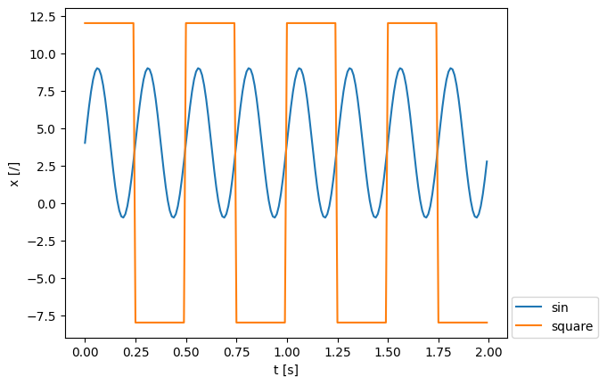
X = np.fft.rfft(x) / len(t) * 2
Y = np.fft.rfft(y) / len(t) * 2
freq = np.fft.rfftfreq(len(t), dt)
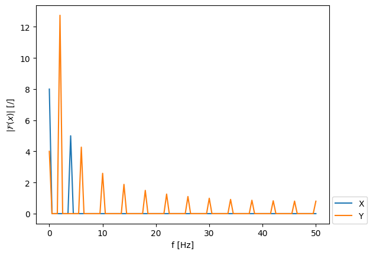
Prikaz lastnosti linearnosti:
v = x + y
V = np.fft.rfft(v) / len(t) * 2
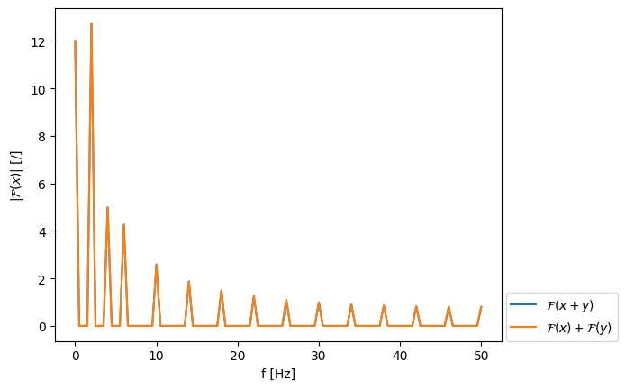
Uporaba linearnosti pri korekciji naloženega signala:
V_Y = V - Y
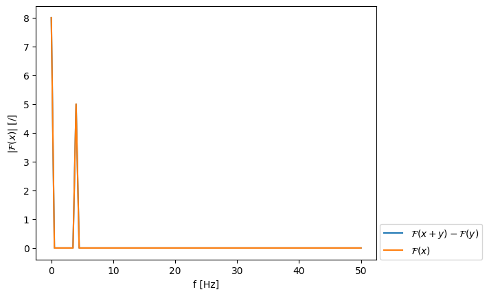
Inverzna FFT razlike vsote signalov in naloženega signala:
v_y = np.fft.irfft(V_Y/2*len(t))
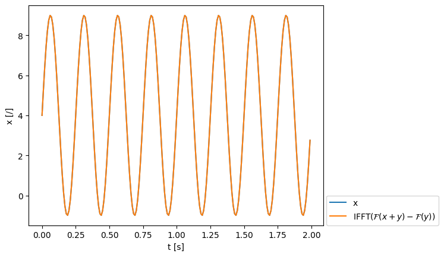
Časovno skaliranje#
Časovno skaliranje
Primer 1: Gaussov impulz#
a = 2 # faktor časovnega skaliranja: a>1: "kompresija" v časovni domeni, "raztezanje" na frekvenčni osi (in obratno)
sigma = 0.15 # Širina gaussovega okna[s]
t0 = 1.0 # Center pulza
# Osnovni signal: Gaussov impulz
x = np.exp(-(t - t0)**2 / (2*sigma**2))
# Saignal pri skaliranem času a*t
y = np.exp(-(a*t - t0)**2 / (2*sigma**2))
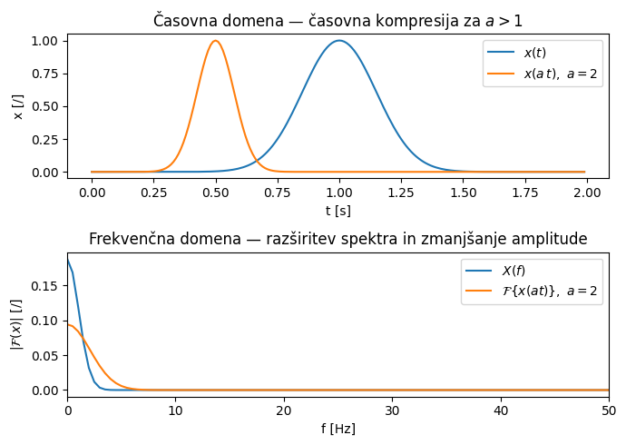
Gaussov pulz je aperiodičen signal s končno energijo, zato časovna kompresija dejansko zmanjša njegovo “površino” in s tem amplitudo spektra za faktor \(1/|a|\).
Pri periodičnem, didskretnem sinusnem signalu v naslendjem primeru bomo imeli z demonstracijo tega vpliva malo več težav.
Primer 2: Simulacija meritve sinusnega signala#
A = 1
p = 2
o = 0
a = 2
sin = lambda t, A, p, o: A*np.sin(2*np.pi*t*p) + o
x = sin(t, A, p, o)
at = np.arange(0, 2, a*dt)
y = sin(at, A, p, o)
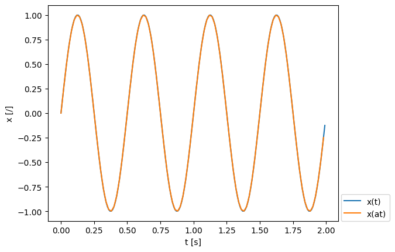
Trajanje meritve je enako, a pri časovno skaliranem koraku \(a \, \Delta t\):
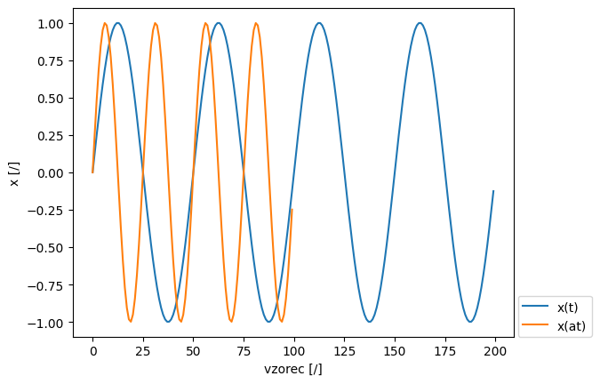
X = np.fft.rfft(x)
Y = np.fft.rfft(y)
freq = np.fft.rfftfreq(len(t), dt)
freq_a = np.fft.rfftfreq(len(at), a*dt)
Če časovno skaliranje poznamo in upoštevamo pri pretvorbi je rezultat pravilen:
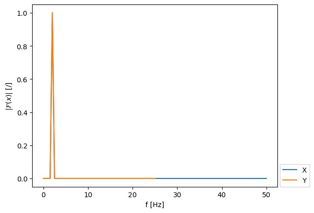
Časovno skaliranje nam v tem primeru povzroča težave, če se ga pri meritvi ne zavedamo:
freq_a_s = np.fft.rfftfreq(len(at), dt)
Za demonstracijo efekta časovnega skaliranja podobno “napako” naredimo tudi pri normiranju spektrov:
Nevede smo merili z vzorčno frekvenco a*fs namesto fs. Rezultat bomo torej (neustrezno) normirali z N=T/fs.
(Jasno je, da v praksi take napake ne bi naredili - dejanjsko število vzorcev je očitno razvidno iz pomerjenega signala. Težave s časovnim skaliranjem imamo, kadar se ga ne zavedamo - gre za hipotetičen scenarij.)
X = X / len(t)
X[1:-1] *= 2
Y = Y / len(t) # tukaj nastane težava - dejanjska dolžina signala y je krajša od vektorja t
Y[1:-1] *= 2
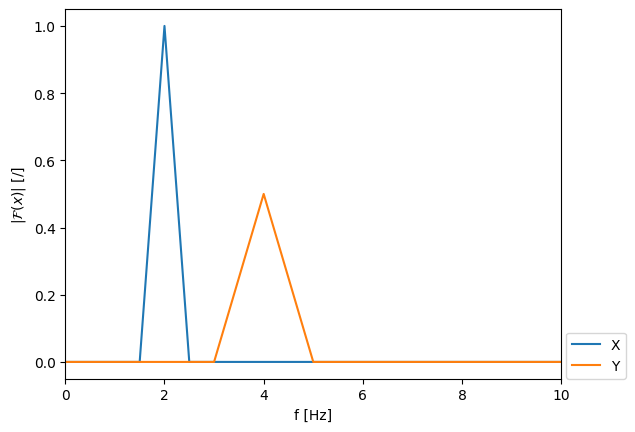
Korekcija časovnega skaliranja
Signal smo pretvorili v frekvenčno domeno pri frekvencah \(f/a\), sedaj ga še narišimo pri \(f/a\):
freq_a_popravek = freq_a_s / a
Popravek amplitude:
Y_popravek = np.abs(a) * Y
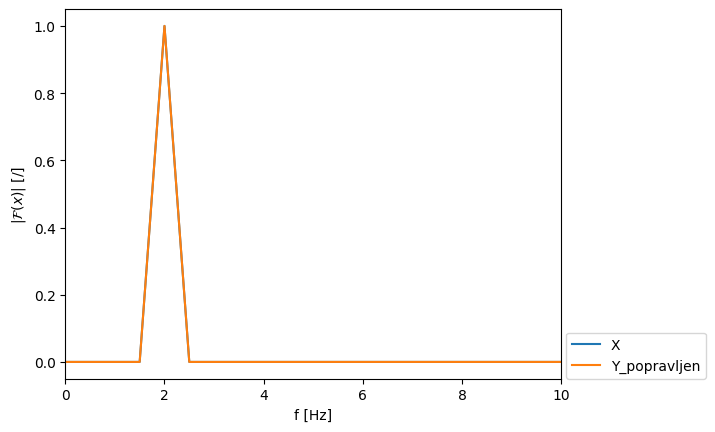
Časovni premik#
Časovni premik
A = 1
p = 2
o = 0
t_0 = 0.55
square = lambda t, A, p, o: A*signal.square(2*np.pi*t*p) + o
x = square(t, A, p, o)
y = square(t-t_0, A, p, o)
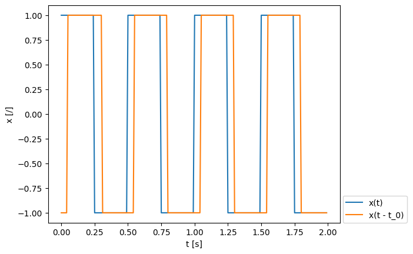
X = np.fft.rfft(x)
Y = np.fft.rfft(y)
freq = np.fft.rfftfreq(len(t), dt)
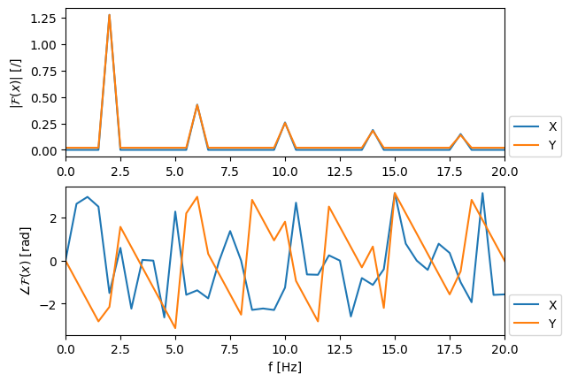
X_shift = np.exp(-1j*2*np.pi*freq*t_0) * X
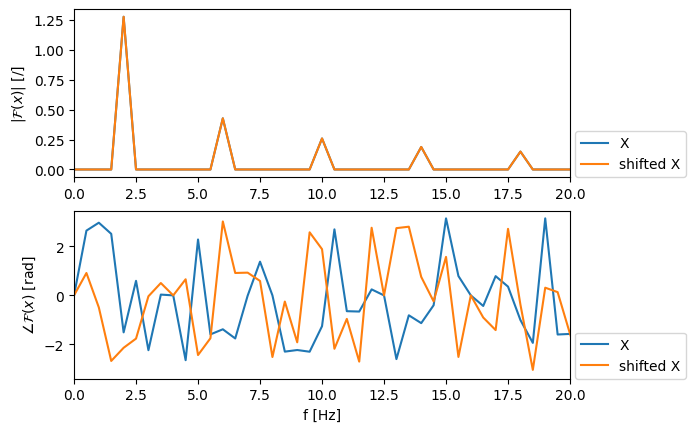
Uspešnost časovnega premika preverimo v časovni domeni:
x_shift = np.fft.irfft(X_shift)
<matplotlib.legend.Legend at 0x7f0cee798cd0>
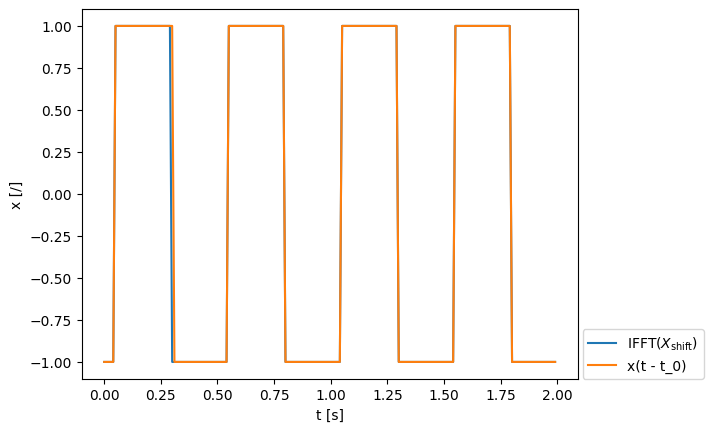
Amplitudna modulacija#
Amplitudna modulacija (frekvenčni zamik)
oziroma:
A = 1
p = 2
o = 0
f_0 = 1.
x = sin(t, A, p, o)
mod = np.cos(2*np.pi*f_0*t)
y = x * mod
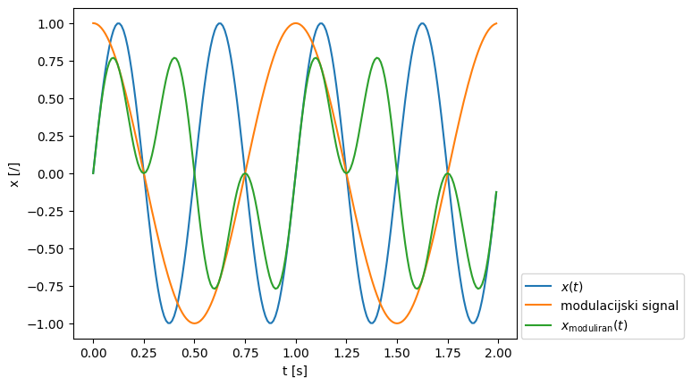
X = np.fft.rfft(x)
Y = np.fft.rfft(y)
freq = np.fft.rfftfreq(len(t), dt)
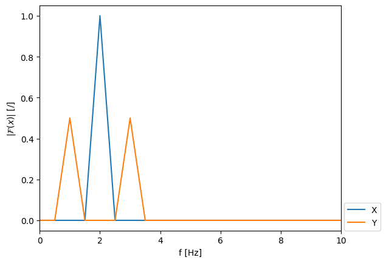
Odvajanje in integriranje#
Odvajanje in integriranje
in obratno:
A = 1
p = 2
o = 1.5
x = sin(t, A, p, o)
Spomnimo se:
\(\frac{\mathrm{d}}{\mathrm{d} \, t}A \, \sin(a \, x) + o = A \, a \, \cos(a \, x)\)
y = A*2*np.pi*p*np.cos(2*np.pi*t*p)
np.allclose(y, np.gradient(x, dt, edge_order=2), rtol=1e-2)
True
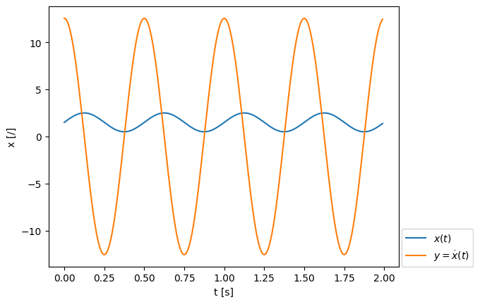
X = np.fft.rfft(x) / len(t)
Y = np.fft.rfft(y) / len(t)
X[1:] *= 2
Y[1:] *= 2
freq = np.fft.rfftfreq(len(t), dt)
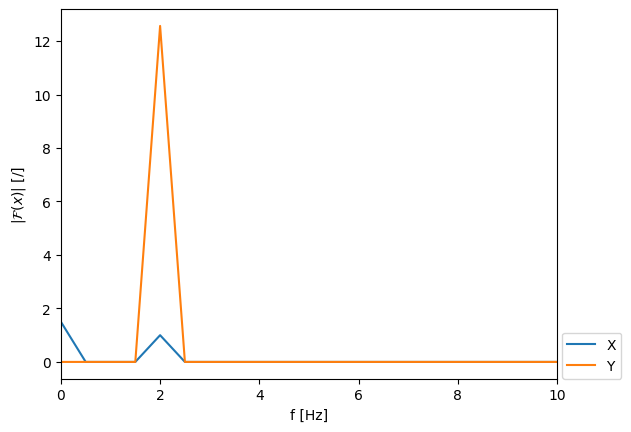
Odvod v frekvenčni domeni:
\(\mathcal{F}(\dot{x}(t)) = \mathrm{i} \, \omega \, \mathcal{F}(x(t))\)
omega = 2*np.pi*freq
dX = 1j*omega * X
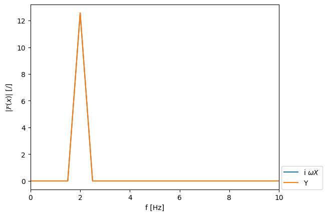
Integral v frekvenčni domeni:
\(\mathcal{F}(x(t)) = 1 / (\mathrm{i} \, \omega) \cdot \mathcal{F}(\dot{x}(t))\)
omega[0] = 1e-6
ing_Y = 1 / (1j*omega) * Y
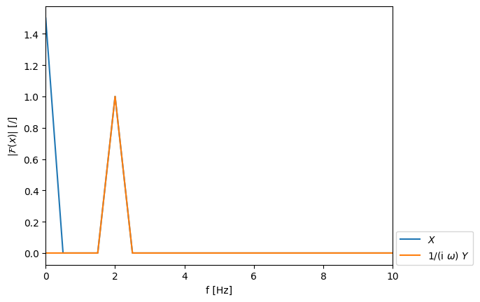
Konvolucija in produkt funkcij#
Konvolucija in produkt funkcij
in
Note
Znak \(*\) označuje konvolucijo:
Ker je produkt v frekvenčni domeni numerično veliko učinkovitejša operacija od konvolucije v časovni domeni, je to ena najpomembnejših lastnosti Fourierove transformacije!
Vizualizacija konvolucije na diskretnem signalu:
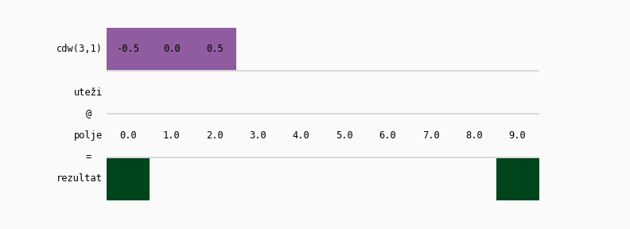
A = 1
p = 3
o = 1.5
x = square(t, A, p, o)
X = np.fft.rfft(x) / len(t)
X[1:] *= 2
freq = np.fft.rfftfreq(len(t), dt)
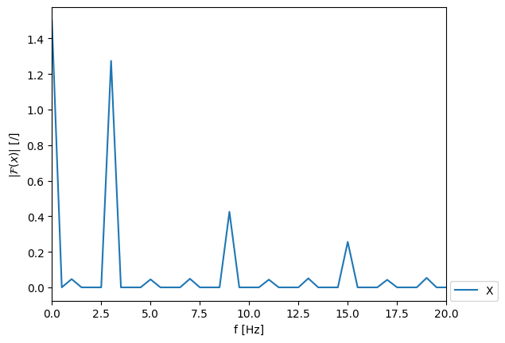
Pripravimo pasovni frekvenčni filter, ki prepušča le v območju \((1.5, 4.5)\) Hz:
freq_band = np.array([1.5, 4.5])
b, a = signal.butter(3, freq_band, btype='bandpass', fs=fs)
Pripravimo frekvenčno prenosno funkcijo filtra \(H(f)\):
w, H = signal.freqz(b, a, len(freq), whole=False, fs=fs)
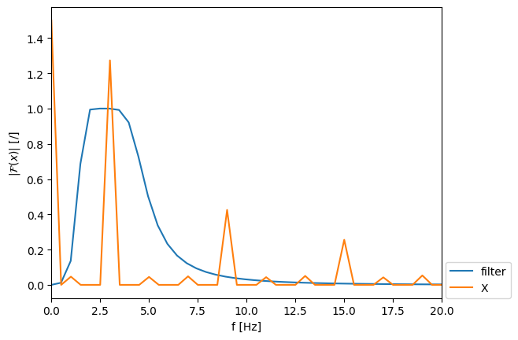
Filtrirajmo signal z množenjem v frekvenčni domeni:
X_filtriran = X * H
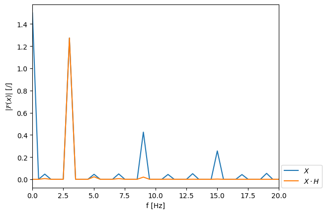
Poglejmo še impulzno prenosno funkcijo filtra \(h(t)\) (odziv filtra v času):
h = np.fft.irfft(H)
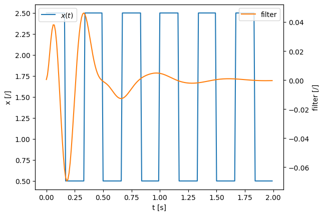
Filtrirajmo signal s konvolucijo v časovni domeni:
x_filtriran = signal.convolve(x, h, mode='full')[:len(x)]
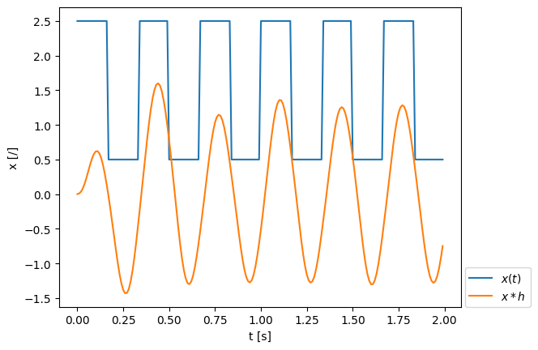
Primerjajmo rezultata:
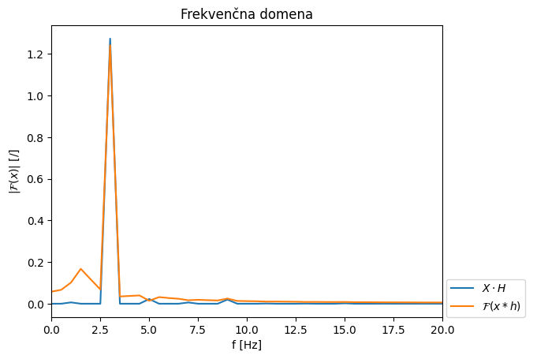
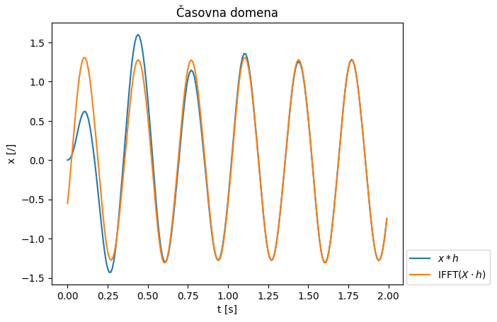
Razlika je posledica implementacije funkcije konvolucije (scipy.signal.convolve). Preverite vpliv parametra mode!